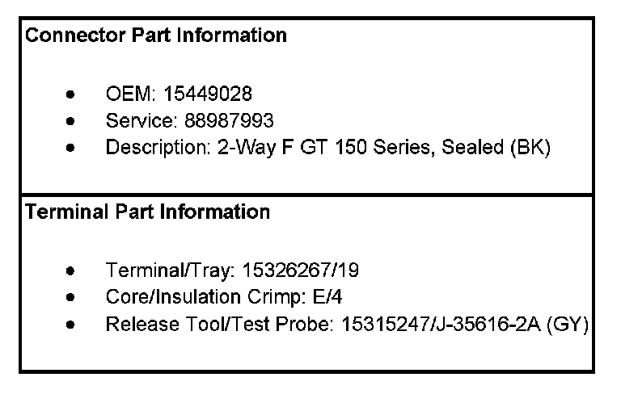
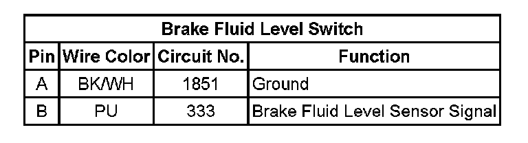

Operation CHARM
: Car repair manuals for everyone.
Home
>>
Cadillac
>>
2007
>>
Escalade ESV AWD V8-6.2L
>>
Repair and Diagnosis
>>
Sensors and Switches
>>
Sensors and Switches - Brakes and Traction Control
>>
Brake Fluid Level Sensor/Switch
>>
Diagrams
Brake Fluid Level Sensor/Switch: Diagrams
Hydraulic Brake Connector End Views

Brake Fluid Level Switch:
